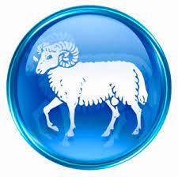
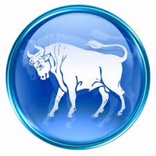
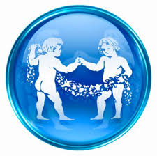
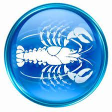
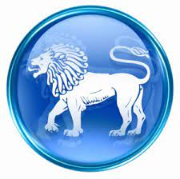
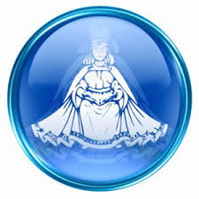
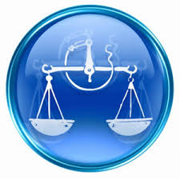
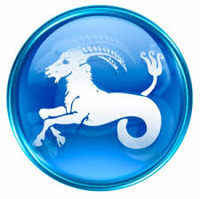

Овен

О́ве́н(лат. Aries, баран) — первый знак зодиака, соответствующий сектору эклиптики от 0° до 30°, считая от точки весеннего равноденствия; кардинальный знак тригона (трёх знаков) «огонь». Овну отводится период с 21 марта по 20 апреля. В созвездии Овна Солнце находится с 19 апреля по 13 мая.
Как первый знак цикла, символизирует начало эволюции; он также последний знак цикла, выражающий возврат к началу и возрождение. Символизм животного — его первичность и роль проводника (баран идёт в голове стада), присущие ему физическая сила и функция оплодотворения (как у всех самцов-млекопитающих), а также симметричность двух рогов спиральной формы противоположного направления.
Как все зодиакальные знаки стихии огня, это мужской, положительный (движение по часовой стрелке) и активный дом Солнца. Его качества из четырёх элементарных — «горячий» и «сухой»; цвет — красный. Это «обитель» планеты Марс (в греко-римском зодиаке, тогда как в первоначальном зодиаке — Меркурий[5]; а «в изгнании» (обитель напротив) — планета Венера, также экзальтирует Солнце, в падении Сатурн. Связанный со знаком миф — о Ясоне и Золотом руне. В схематическом делении тела человека на 12 частей — управляет головой (первой частью сверху), мозгом, а также селезёнкой и надпочечниками.
ТЕЛЕЦ

Теле́ц (лат. Taurus) — второй знак зодиака, соответствующий сектору эклиптики от 30° до 60°, считая от точки весеннего равноденствия, и созвездию Телец; постоянный знак тригона Земля.
В западной астрологии считается, что Солнце находится в знаке Тельца примерно с 21 апреля по 20 мая. Не следует путать знак Тельца с созвездием Тельца, в котором Солнце находится с 14 мая по 19 июня.
Знаком Тельца управляет Венера, здесь в экзальтации Луна, в изгнании Марс и Плутон, в падении Уран
БЛИЗНЕЦЫ

Близнецы (лат. Gemini) — третий знак зодиака. Следует после Тельца, соответствующий сектору эклиптики от 60° до 90°, считая от точки весеннего равноденствия; мутабельный знак тригона Воздух.
В западной астрологии считается, что Солнце находится в знаке Близнецов приблизительно с 21 мая по 21 июня[1]. Не следует путать знак Близнецов с созвездием Близнецов, в котором Солнце находится с 20 июня по 20 июля.
Планета, управляющая знаком — Меркурий
РАК

Рак (лат. Cancer) — четвёртый знак зодиака, соответствующий сектору эклиптики от 90° до 120°, считая от точки весеннего равноденствия; кардинальный знак тригона Вода. Правит четвёртым домом гороскопа.
В западной астрологии считается, что Солнце находится в знаке Рака приблизительно с 22 июня по 22 июля[1][2]. Не следует путать знак Рака с созвездием Рака, в котором Солнце находится с 21 июля по 9 августа[3].
Знаком Рака управляет Луна, здесь в экзальтации Юпитер, в изгнании Сатурн и в падении Марс
>
ЛЕВ

Лев (лат. Leo) — пятый знак зодиака, соответствующий сектору эклиптики от 120° до 150°, считая от точки весеннего равноденствия; постоянный знак тригона «огонь». в западной астрологии Льву отводится период с 23 июля по 22 августа, времени летней жары.В созвездии Льва Солнце находится с 10 августа по 15 сентября.
Как все зодиакальные знаки стихий огня, это мужской, положительный (движение по часовой стрелке) и активный дом Солнца. Его качества из четырёх элементарных — «горячий» и «сухой»; цвет — жёлтого золота. Это «обитель» Солнца, а «в изгнании» (обитель напротив) — планеты Уран и Сатурн. В схематическом делении тела человека на 12 частей — управляет сердцем, спинным мозгом, а также спиной и кровообращением.
Астрологическая эра Льва продолжалась с 12-го по 10-е тысячелетие до н. э. (11 220 — 9060 годы до н. э.) — по одним источникам, по другим с 11-го по 9-е тысячелетие до нашей эры. После анализа Дендерского зодиака к этой эре относят окончательное погружение Атлантиды (Всемирный потоп) вследствие движения земных полюсов, после которого Солнце, ранее восходившее на западе, стало подниматься утром на востоке. Последующая история человечества наполнилась предупреждениями о возможном повторении катаклизма. Астрологический зодиак движется против часовой стрелки — противоположно астрономическому, который совершает движение по часовой стрелке.
ДЕВА

Дева (лат. Virgo) — шестой знак зодиака, соответствующий сектору эклиптики от 150° до 180°, считая от точки весеннего равноденствия; мутабельный знак тригона Земля.
В западной астрологии считается, что Солнце находится в знаке Девы приблизительно с 23 августа по 22 сентября. Не следует путать знак Девы с созвездием Девы, в котором Солнце находится с 16 сентября по 30 октября.
Правящая планета Девы — Меркурий.
Знаком Девы управляет Меркурий, здесь в экзальтации также Меркурий, в изгнании Юпитер и в падении Венера.
ВЕСЫ

>
Весы (лат. Libra) — седьмой знак зодиака, соответствующий сектору эклиптики от 180° до 210°, считая от точки весеннего равноденствия; кардинальный знак тригона Воздух. Планетой-покровительницей знака Весов считается Венера. Весы — единственный неодушевлённый предмет в знаках зодиака.
В западной астрологии считается, что Солнце находится в знаке Весов приблизительно с 23 сентября по 22 октября. Не следует путать знак Весов с созвездием Весов, в котором Солнце находится с 31 октября по 22 ноября.
Знаком Весов управляет Венера, здесь в экзальтации Сатурн, в изгнании Марс и в падении Солнце.
СКОРПИОН
Скорпион (лат. Scorpius) — восьмой знак зодиака, соответствующий сектору эклиптики от 210° до 240°, считая от точки весеннего равноденствия; постоянный знак тригона Вода.
В западной астрологии считается, что Солнце находится в знаке Скорпиона приблизительно с 23 октября по 21 ноября[1]. Не следует путать знак Скорпиона с созвездием Скорпиона, в котором Солнце находится с 23 ноября по 29 ноября[2].
Знаком Скорпиона управляет Плутон и Марс, в экзальтации здесь Уран, в изгнании Венера и в падении Луна
СТРЕЛЕЦ

Стреле́ц (лат. Sagittarius) — девятый знак зодиака, соответствующий сектору эклиптики от 240° до 270°, считая от точки весеннего равноденствия; мутабельный (меняющийся) знак тригона (трёх знаков) «огня». Знаку Стрельцу отводится период с 22 ноября по 21 декабря[1]. Не следует путать знак Стрельца и созвездие Стрельца, в котором солнце находится с 18 декабря по 21 января.
Изображается кентавром, готовым выпустить стрелу; выражает гармонию животного тела (круп лошади), человеческой души (грудь) и духа (голова). В Стрельце выражены энергичность и целеустремлённость.
Как все зодиакальные знаки стихии огня, это мужской, положительный (движение по часовой стрелке) и активный дом Солнца. Его качества из четырёх элементарных — «горячий» и «сухой»; цвет — фиолетовый. Это «обитель» Юпитера, а «в изгнании» (обитель напротив) — планета Меркурий. Связанные со знаком мифы — об Энкиду (из «Эпоса о Гильгамеше»), о кентавре Хироне и Орионе. В схематическом делении тела человека на 12 частей — управляет тазовой областью и бёдрами, а также дыхательные путями
КОЗЕРОГ

Козеро́г (лат. Capricornus) — десятый знак зодиака, соответствующий сектору эклиптики от 270° до 300°, считая от точки весеннего равноденствия; кардинальный знак тригона Земля.
В западной астрологии считается, что Солнце находится в знаке Козерога с 21 декабря по 19 января. Не следует путать знак Козерога с созвездием Козерога, в котором Солнце находится с 18 января по 15 февраля.
По мнению астрологов, знаком Козерога управляет Сатурн, здесь в экзальтации Марс, в изгнании Луна и в падении Юпитер
ВОДОЛЕЙ
Водолей
Водолей (лат. Aquarius) — одиннадцатый знак зодиака, соответствующий сектору эклиптики от 300° до 330°, считая от точки весеннего равноденствия; постоянный знак тригона Воздух. Обычно изображается в виде человека мужского пола с кувшином, льющего воду.
В западной астрологии считается, что Солнце находится в знаке Водолея приблизительно с 20 января по 19 февраля. Не следует путать знак Водолея и созвездие Водолея, Солнце в котором находится с 16 февраля по 11 марта.
Управляющие планеты Водолея — Уран и Сатурн
РЫБЫ
Знак Рыбы (лат. Pisces) — двенадцатый знак зодиака, соответствующий сектору эклиптики от 330° до 360°, считая от точки весеннего равноденствия; мутабельный знак тригона Вода.
В западной астрологии считается, что Солнце находится в знаке Рыб приблизительно с 20 февраля по 20 марта. Не следует путать знак Рыб с созвездием Рыб, в котором Солнце находится с 12 марта по 18 апреля.
Знаком Рыб управляют Юпитер и Нептун, здесь в экзальтации Венера, в изгнании и падении Меркурий[